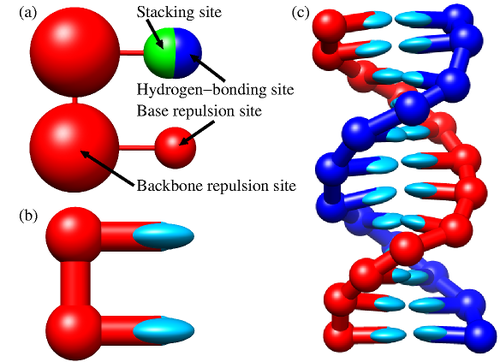

Most of the matter around us does not simply fit within the idealized pictures of crystalline solids or simple liquids: examples include colloids, polymers, surfactants, liquid crystals, foams, gels, and biological materials such as proteins, DNA, and cell membranes.
This means that cellular life itself (the very constituents that make us) obeys principles that go beyond the standard patterns of conventional solid-state physics.
This branch of physics is called soft condensed matter physics, or macromolecular physics, or the physics of complex fluids. Specifically, soft matter refers to an area of condensed matter focused on systems that can be easily deformed.
In this course, we will emphasize the fact that many such systems are not crystalline: thermal noise and disordered configurations play a key role in their phase behavior, and hence we think of them as complex disordered systems.
While we often think about problems in physics as a matter of energy minimization, in soft-matter physics a key role is played by fluctuations. Typically (but not exclusively) these are thermal fluctuations. This means that entropy and not only the energy from the interactions plays a key role.
This is because soft matter systems are typically composed of many microscopic constituents in contact with an environment. The appropriate description of the macroscopic state of such systems is therefore statistical and uses the language of statistical mechanics. The relevant energy, therefore, is the free energy of the statistical ensemble representative of the system under consideration. For example, in the canonical ensemble, this is the Helmholtz free energy
\[F = U-TS\]
where \(U\) is the internal energy, \(T\) the temperature and \(S\) is the entropy of the system. Therefore, in a broader sense, soft matter is the physics of those systems for which the internal energy and the entropy are on comparable scales.
In other words, fluctuations of the internal energy are on the same scale as thermal fluctuations:
\[\Delta U \sim k_BT \]
where \(k_B\) is the Boltzmann constant and \(\Delta U\) indicates standard deviations from the average internal energy.
NoteThe Physics of Entropy
Soft matter physics is fundamentally the physics of entropy. Unlike
13.1 Systems and definitions
13.1.1 Elementary constituents and energy scales
Soft matter covers a wide spectrum of deformable systems. Each is constituted of many parts . Each is deformable because the interactions amongst such parts are weak compared to the perturbing forces (e.g. thermal fluctuations or mechanical loading).
In hard condensed matter, the elementary constituents are the atoms themselves, eventually with their subatomic particles. Between atoms, the scale of the interaction energies is in the 0.1 to 10 eV: for example the carbon-carbon covalent bond is approximately 3.6 eV.
The main units of soft matter are not atoms. They are instead themselves aggregates of atoms such as:
colloids, micrometer- to nanometer-sized particles dispersed in a fluid.
polymers, macromolecules composed of long chains such as DNA, proteins, plastics
surfactants, macromolecules wuth polar head and tails that lead to the spontaneous formation of structures such as bilayers (e.g. the cellular membrane).
Amongst such units, the dominating forces of soft matter are much weaker than in hard condensed matter:
Van der Waals forces are of the order of 0.001-0.01 eV
weak interactions such as hydrogen-bonds are typically in the 0.01-0.2 eV range
the thermal energy at room temperature is \(k_B T \approx 0.025 eV\) (check it for yourself)
At the microscopic level, all these interactions have essentialy one source: the electrostatic force. However, this information is practically of no use when we want to understand how the units of soft matter come together to give rise to macroscopic properties of soft matter systems, such as their elastic properties, their viscosities, their plasticity. In fact, the emphasis on the atomistic details of the various units is fundamentally misleading: atomistically very different objects (e.g. colloids and micelles) can in fact share very similar macroscopic behaviours.
Therefore, theories of soft matter leverage the concept of coarse-graining, rooted in the renormalisation group notions explored earlier. Coarse-graining means integrating out the unimportant degrees of freedom and only describing the units in terms of a few important parameters. For example, instead of taking a full atomistic representation of the DNA we may want to focus on the fact that structurally it is a long chain with specific bending energies: we may want to include the fact that it is formed by a double helix but we may not want to specifically construct every single atom in the sugar chain the forms the backbone. An example of DNA coarse garining is provided by the succesful model oxDNA (see picture below):

oxDNA model: (a) Base structure on one strand; (b) planarity of the bonding; (c) an example of the resulting double strand.
NoteCoarse graining
Coarse graining is often motivated by intuition, experimental insights or a simple desire of simplification. It allows for a multi-scale description of the problem which permits to describe large systems and log time scales.
Nonetheless, coarse-graining can also be made mathematically rigorous. For example, rigorous coarse graining in statistical mechanics can be performed by projecting the dynamics onto a relevant and an irrelevant (fluctutating) part, in the so called Mori-Zwanzig formalism(Mori 1965).
13.1.2 Classes of systems
In our exploration of soft matter we will focus on six main classes of systems which display different physics:
colloidal dispersions
polymeric systems
liquid crystals
surfactant aggregates
arrested systems
active matter
Colloidal dispersions
Colloidal dispersions are systems where small particles, typically in the nanometer to micrometer range, are dispersed in a continuous medium (a solvent). Prototypical colloids are spherical particles of various sizes (e.g. as those present in paint) but colloidal science has achieved a high degree of sophistication, with colloidal particles with various different shapes and interactions.
Colloids are often thought as big atoms: they exhibit Brownian motion, can form ordered structures (colloidal crystals), and display phase transitions similar to atomic systems. However, their larger size and slower dynamics make them ideal for studying phenomena that are difficult to observe in atomic systems.
Polymeric systems
Polymer physics is a field on its own. Polymers are macromolecules composed of repeating structural units (monomers) connected by covalent bonds. Their unique properties arise from their string-like structure and the interplay between entropic and energetic contributions.
Polymers can be classified into two main categories:
Synthetic polymers, including plastics (e.g., polyethylene, polystyrene) and synthetic rubbers.
Biopolymers, such as polymers like DNA, RNA, and proteins.
import py3Dmol #install this with: pip install py3dmolpdb_id ="1XQ8"# Human micelle-bound alpha-synuclein, an analog of long polymers # Fetch the PDB structure from the RCSB PDB serverview = py3Dmol.view(query='pdb:'+ pdb_id)# Customize visualization (you can change the style or the color)view.setStyle({}, {'sphere': {'color': 'spectrum'}});view.setBackgroundColor('white') # Set background color to whiteview.show()
3Dmol.js failed to load for some reason. Please check your browser console for error messages.
3D Rendering of the bio-polymer synuclein as extracted from the RCSB Protein Data Bank (click to rotate)
Compared to colloids, polymers have distiunctive characteristics common to all chain-like molecules, such as their topological constraints due to teh fact that two polymers cannot cross each other (a phenomenon known as polymer entanglement).
Liquid crystals
When we take soft matter units that are highly anisotropic (e.g. elongate in particular directions) thermal fluctuations and high packing lead to equilibrium states woth a degree of order that is intermediate between the complete disorder of a liquid and the long-ranged, three-dimensional order of a crystal.
Such states are referred to as liquid crystal and can be described successffully with continuum free energy theories that take into account the symmetries of the order parameters.
Components that form liquid crystals are called mesogens and include highly anisotropic organic macromolecules (as used in liquid crystal displays), rod-like molecules or polymeric aggregates, as well as disk-shaped molecules and particles(such as triphenylene and derivatives).
Surfactant aggregates
When two distinct fluid phases are put into contact, a free energy cost per unit area ensues: this is the surface tension. It is possible to control the tension by introducing molecules that sit at the interface between the two phases, called surfactants.
Hence, surfactants are molecules which contain chemical groups with different affinities (they are amphiphilic). A key example is the case of phospholipids, which posses both hydrophilic (water-preferring) heads and hyrdrophobic (water avoiding) tails. As surfactants sit at inetrface they are able to self-assemble and separate different fluid phases, forming equilibrium bilayers and vesicles that are ubiquitous in cell biology.
Arrested systems
We have stressed that the thermal energy is distinctive of soft matter systems. It would be then natural to assume that as we reduce the temperature, we should converge readily to the solid state physics of crystalline solids. In fact, on the way to low temperatures, the lack of long-range order of most soft-matter systems has important consequences: many such systems find themselves trapped in states that are not corresponding to the global energy minimum (i.e. the crystal) and instead display non trivial mechanisms of structural relaxation. These systems are disordered a bit like liquids, but share various mechanical properties, such as emergence rigidity, elasticity and plasticity.
Examples of arrested systems include:
Glasses, such as silica glass or metallic glasses, where the system is kinetically trapped in a disordered state.
Gels, which are networks of interconnected particles or polymers that span the entire system, providing rigidity despite being mostly liquid.
These systems are arrested as their relaxation towards equilibrium is so slow that is longer than any observable timescales. This makes them fundamentally out-of-equilibrium systems, escaping from an ordinary description in terms of equilibrium statistical mechanics.
Active matter
Active matter refers to systems composed of units that consume energy to generate motion or mechanical stresses. Unlike passive systems, active matter is inherently out of equilibrium due to the continuous energy input at the microscopic level. Examples include:
Biological systems, such as bacterial colonies, cell tissues, and flocks of birds.
Synthetic systems, like self-propelled colloids or active gels.
The study of active matter focuses on understanding how individual activity leads to emergent collective behaviors, such as swarming, clustering, or pattern formation, often described using hydrodynamic theories or agent-based models.